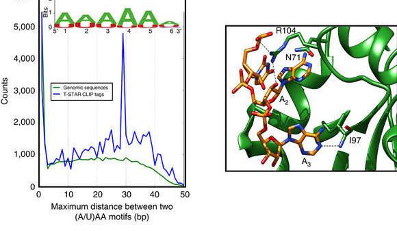

<!--
@license
Copyright (c) 2016 The Polymer Project Authors. All rights reserved.
This code may only be used under the BSD style license found at http://polymer.github.io/LICENSE.txt
The complete set of authors may be found at http://polymer.github.io/AUTHORS.txt
The complete set of contributors may be found at http://polymer.github.io/CONTRIBUTORS.txt
Code distributed by Google as part of the polymer project is also
subject to an additional IP rights grant found at http://polymer.github.io/PATENTS.txt
-->

<link rel="import" href="../bower_components/polymer/polymer.html">
<link rel="import" href="shared-styles.html">

<dom-module id="my-view2">
  <template>
    <style include="shared-styles">
      :host {
        display: block;

        padding: 10px;
      }
    </style>


    <div class="card">
      <div class="card-image">
        
        <span class="card-title"> <p>Structural basis of RNA recognition and dimerization by the STAR proteins T-STAR and Sam68</span>
      </div>
      <div class="card-content">
        <p> Using RNA CLIP (crosslinking immunoprecipitation) data, we show that the RNA binding protein T-STAR binds to a bipartite motif where the motifs are between 30 to 50 bases apart. 
      </div>
      <div class="card-action">
        <a href="https://www.ncbi.nlm.nih.gov/pmc/articles/PMC4735526/">10.1038/ncomms10355</a>
      </div>
    </div>

    <div class="card">
      <div class="card-image">
        
        <span class="card-title"> <p>Field Guidelines for Genetic Experimental Designs in High-Throughput Sequencing
      </div>
      <div class="card-content">
        <p> Published review of computational pipelines to study RNA splicing.
      </div>
      <div class="card-action">
        <a href="http://www.springer.com/la/book/9783319313481">ISBN 978-3-319-31350-4</a>
      </div>
    </div>


  </template>

  <script>
    Polymer({
      is: 'my-view2'
    });
  </script>
</dom-module>
